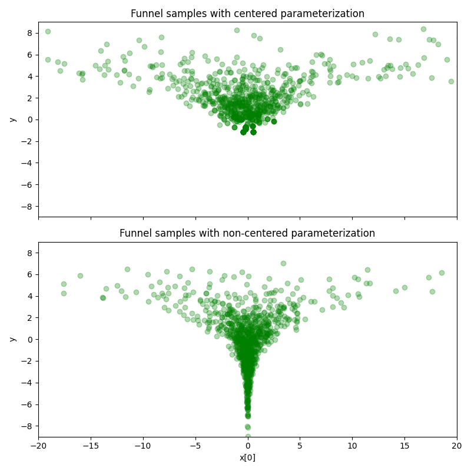

Note
Click here to download the full example code
Neal’s Funnel¶
This example, which is adapted from [1], illustrates how to leverage non-centered
parameterization using the class numpyro.distributions.TransformedDistribution.
We will examine the difference between two types of parameterizations on the
10-dimensional Neal’s funnel distribution. As we will see, HMC gets trouble at
the neck of the funnel if centered parameterization is used. On the contrary,
the problem can be solved by using non-centered parameterization.
Using non-centered parameterization through TransformedDistribution in NumPyro has the same effect as the automatic reparameterisation technique introduced in [2]. However, in [2], users need to implement a (non-trivial) reparameterization rule for each type of transform. Instead, in NumPyro the only requirement to let inference algorithms know to do reparameterization automatically is to declare the random variable as a transformed distribution.
References:

Stan User’s Guide, https://mc-stan.org/docs/2_19/stan-users-guide/reparameterization-section.html
Maria I. Gorinova, Dave Moore, Matthew D. Hoffman (2019), “Automatic Reparameterisation of Probabilistic Programs”, (https://arxiv.org/abs/1906.03028)
Out:
============================= Centered Parameterization ==============================
mean std median 5.0% 95.0% n_eff r_hat
x[0] 0.48 7.84 0.13 -9.47 9.57 657.96 1.00
x[1] -0.16 7.29 0.01 -12.88 7.84 1255.60 1.00
x[2] -0.16 7.42 -0.07 -10.64 8.96 1377.28 1.00
x[3] 0.07 8.54 -0.02 -9.43 11.46 991.83 1.00
x[4] 0.57 9.10 0.04 -10.72 10.75 570.00 1.00
x[5] -0.16 7.06 0.05 -9.41 8.28 909.87 1.00
x[6] -0.17 7.50 0.03 -13.60 7.15 862.42 1.00
x[7] -0.13 10.47 -0.00 -13.27 8.86 1416.06 1.00
x[8] 0.70 7.25 0.10 -9.52 11.08 641.25 1.00
y 1.65 2.40 1.44 -2.28 5.16 30.60 1.01
Number of divergences: 0
=========================== Non-centered Parameterization ============================
mean std median 5.0% 95.0% n_eff r_hat
x[0] -0.40 9.48 -0.00 -5.02 4.55 781.36 1.00
x[1] 0.27 7.06 -0.00 -4.89 5.03 646.12 1.00
x[2] 0.14 6.85 -0.00 -4.11 4.84 638.22 1.00
x[3] -0.27 13.96 -0.01 -3.77 4.90 656.96 1.00
x[4] 0.34 7.84 -0.00 -3.85 5.87 638.96 1.00
x[5] -0.23 7.68 -0.00 -5.16 3.75 965.06 1.00
x[6] -0.15 6.84 0.01 -4.98 4.41 886.56 1.00
x[7] -0.11 9.76 0.01 -4.31 4.07 956.32 1.00
x[8] 0.25 6.86 -0.00 -4.09 5.02 643.42 1.00
y -0.05 2.97 -0.13 -5.19 4.41 2265.19 1.00
Number of divergences: 0
import argparse
import os
import matplotlib.pyplot as plt
from jax import random
import jax.numpy as np
import numpyro
import numpyro.distributions as dist
from numpyro.distributions.transforms import AffineTransform
from numpyro.infer import MCMC, NUTS
def model(dim=10):
y = numpyro.sample('y', dist.Normal(0, 3))
numpyro.sample('x', dist.Normal(np.zeros(dim - 1), np.exp(y / 2)))
def reparam_model(dim=10):
y = numpyro.sample('y', dist.Normal(0, 3))
numpyro.sample('x', dist.TransformedDistribution(
dist.Normal(np.zeros(dim - 1), 1), AffineTransform(0, np.exp(y / 2))))
def run_inference(model, args, rng_key):
kernel = NUTS(model)
mcmc = MCMC(kernel, args.num_warmup, args.num_samples, num_chains=args.num_chains,
progress_bar=False if "NUMPYRO_SPHINXBUILD" in os.environ else True)
mcmc.run(rng_key)
mcmc.print_summary()
return mcmc.get_samples()
def main(args):
rng_key = random.PRNGKey(0)
# do inference with centered parameterization
print("============================= Centered Parameterization ==============================")
samples = run_inference(model, args, rng_key)
# do inference with non-centered parameterization
print("\n=========================== Non-centered Parameterization ============================")
reparam_samples = run_inference(reparam_model, args, rng_key)
# make plots
fig, (ax1, ax2) = plt.subplots(2, 1, sharex=True, figsize=(8, 8))
ax1.plot(samples['x'][:, 0], samples['y'], "go", alpha=0.3)
ax1.set(xlim=(-20, 20), ylim=(-9, 9), ylabel='y',
title='Funnel samples with centered parameterization')
ax2.plot(reparam_samples['x'][:, 0], reparam_samples['y'], "go", alpha=0.3)
ax2.set(xlim=(-20, 20), ylim=(-9, 9), xlabel='x[0]', ylabel='y',
title='Funnel samples with non-centered parameterization')
plt.savefig('funnel_plot.pdf')
plt.tight_layout()
if __name__ == "__main__":
assert numpyro.__version__.startswith('0.2.4')
parser = argparse.ArgumentParser(description="Non-centered reparameterization example")
parser.add_argument("-n", "--num-samples", nargs="?", default=1000, type=int)
parser.add_argument("--num-warmup", nargs='?', default=1000, type=int)
parser.add_argument("--num-chains", nargs='?', default=1, type=int)
parser.add_argument("--device", default='cpu', type=str, help='use "cpu" or "gpu".')
args = parser.parse_args()
numpyro.set_platform(args.device)
numpyro.set_host_device_count(args.num_chains)
main(args)
Total running time of the script: ( 0 minutes 10.076 seconds)